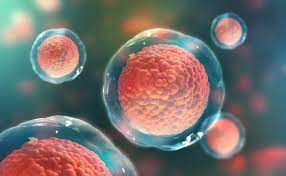

O QUE SÃO CÉLULAS-TRONCO?
células-tronco são células que têm o potencial de recompor tecidos danificados e, assim, auxiliar no tratamento de doenças como câncer, mal de Parkinson, mal de Alzheimer e doenças degenerativas e cardíacas.
